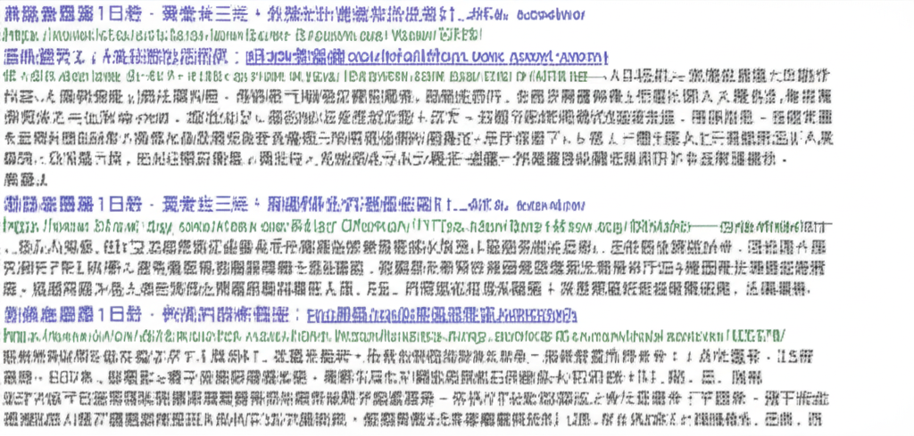

新聞摘要分析
引言
這是一份基於提供的搜尋結果的新聞摘要分析報告。報告將分析不同新聞來源涵蓋的主題，時間分佈以及可能反映出的社會趨勢。這些新聞涵蓋了從國際政治（釣魚台主權爭議）到國內社會議題（少子化、房貸、催生二胎），以及財經資訊和地方新聞等多個方面。
主體內容
第一點：新聞來源多樣性與時間分佈
新聞來源非常廣泛，包含主流新聞網站（NOWnews今日新聞）、投資部落格（CMoney投資網誌）、社群媒體（Facebook）、地方新聞網站（台灣好新聞）、教育機構網站（龍安國民小學）、維基百科、黃頁網站、影音平台（YouTube）和海外華文媒體（世界新聞網）。時間分佈主要集中在過去 1-2 天內，顯示新聞的時效性。
第二點：主題涵蓋廣泛
- 時事新聞： NOWnews提供即時新聞，釣魚台主權爭議反映國際政治議題。
- 財經新聞： CMoney投資網誌提供美股相關資訊，DELL, CDW, TSLA等股票成為關注焦點。
- 社會議題： 少子化問題與「婚育宅」政策的討論，反映了台灣社會對生育率下降的擔憂。催生二胎的新聞則揭示了傳統家庭觀念與現代女性生育意願之間的衝突。房屋二胎降息以及房屋貸款等信息，反映了當前房地產市場的狀態。
- 地方新聞： 龍安國民小學的網站內容以及加州舊金山的新聞，則提供了區域性的信息。
- 娛樂與生活： YouTube上的東方衛視節目，以及徵才廣告，反映了人們對於生活品質和工作機會的追求。
第三點：潛在的社會趨勢與問題
- 少子化問題： 「婚育宅」政策的討論表明政府正在努力應對少子化問題，但專家對其效果持保留態度。南韓的生育率政策被拿來比較，暗示台灣需要更有效的政策。
- 家庭觀念衝突： 弟媳被催生二胎的新聞反映了傳統重男輕女觀念在一些家庭中仍然存在，這可能對女性的生育意願產生負面影響。
- 數位資訊傳播： 社群媒體(Facebook)成為新聞傳播的管道之一，顯示資訊傳播的快速和多元化。
結論
這份新聞摘要反映了台灣社會關注的多元議題，涵蓋了國際政治、經濟發展、社會問題以及地方生活等多個層面。新聞時間分佈集中，顯示了新聞的時效性。分析這些新聞可以幫助我們了解當前的社會趨勢和潛在問題，並為相關政策制定提供參考。